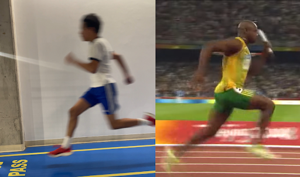
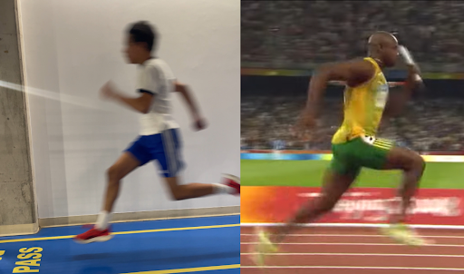

3.0: TRANSITION
 

3.1: What even is that?
If you’re wondering what that even is…
Don’t worry, I barely knew what it was as well.
When I said “the drive phase is overlooked”, the transition phase would be an understatement for that,
it’s basically invisible.
The transition is supposed to last from the end of your drive phase to the start of your top speed, bridging that gap.
For elites, it starts around 30 and ends at 60 meters
Visually, it’s when you’re already near upright, right after the drive phase, already looking like you’re at top speed.
But since this is so overlooked, this is where you can become the most deadly.
If you think this phase of your sprint is just “mental prep to handle top speed.”
You’d be dead wrong.
Take Usain Bolt for example:
His speed kept going up, even after he was out of his drive phase.
All the way from 30 to 70 meters.
His split times were like this in 10m intervals⁽¹⁴⁾:
0.86, 0.83, 0.82, 0.81.
That’s a pretty massive portion of acceleration, especially that late into a 100m race.
This is one of the factors that made him keep winning his races, even if his start was not the best.
What’s actually going on is that the mechanics are changing over time,
…and here are the mechanics that changes in question:
- Stride frequency increases even further
- Ground contact time drops significantly.
- Shin angle shifts from being forwards to nearly vertical
- Spine and head should be vertical at this point (with a very slight forward lean)
- Stride cycle changes, becoming a more cycling action
- Arm swing is swift and aggressive (“thumb to the eye, elbow to the sky⁽¹⁷⁾”)
- Relaxation becomes crucial
3.2: Importance
This is when you will truly understand why the transition phase is not random and actually critical (and cool)!
First of all, we have to understand the primary goal, more complicated than any of the other ones:
That being: continue to accelerate by shifting from horizontal force to fast vertical force as efficiently as possible.
Now here’s the breakdown of how that works:
When it comes to shifting horizontal force to rapid vertical movement, it basically means this:
Force vector shifts from horizontal to vertical.
“Force vector” is literally just the direction of force that you put into the track,
and you can usually tell the direction based on the shin angle when the foot touches the ground.
How do sprinters actually do that?
Well, most of it happens naturally, but…
The quads in acceleration shifts to the role of the hip flexors, including hamstrings and glutes getting increasingly more important⁽¹⁴⁾.
And the muscles involved are responsible for recycling the force from acceleration, now as quickly as possible,
it’s not your stride length increasing from more force,
this is why ground contact time drops and stride frequency increases.
And just like all other primary goals, this will apply for every mechanic that was mentioned for this phase,
like, shin angles being vertical?
Simply because the force vector needs to be vertical.
That's it for the explanation.
“But wait! Where is the secondary goal? Why vertical force specifically?”
There is no secondary goal,
and that’s because the primary goal literally explains everything you need to know about the transition phase.
For forces being vertical?
That’s a whole different reason, and I can explain it as easily as possible,
simply put, it improves your recycling efficiency by improving your stretch-shortening cycle⁽¹⁵⁾,
That basically explains the speed muscles expanding and shortening upon contact get faster.
Well that was a bit of a change in difficulty, right?
However, do you realize that you still manage to understand it?
That’s the beauty of the progression.
3.3: Analysis
As we know, the transition phase is mostly invisible to the naked eye without actually slowing it down and measuring the stats (like stride frequency increasing).
But, we can try our best to make something out of it.
You know the drill, what do you notice?
Well, but not really notice visually this time,
it’s more like trying to tell what intention is different based on the static image.
And no, the knees being higher is not different, that’s just at different parts of the stride.
Well, it is nearly impossible to tell just from an image, but since I sprinted to record that photo, I can confidently say that…
The intentions were very different.
When I got upright, my body naturally assumed I was already at full blast without transitioning.
Because of that, my stride frequency flatlined.
While if you watched the video in motion (https://www.youtube.com/watch?v=FwGi9S7wkgk), you can see that Powell’s stride frequency kept increasing.
One more big thing to point out that I noticed (and you can maybe see in the photo too) is that…
I’m passively applying force.
You can likely see this from the foot,
It looks like it’s just landing normally instead of actively striking down under my hips.
And that’s a big separator to apply vertical force AFAP.
And then if you saw a quick look at Asafa Powell’s video, he pulls the foot back right before landing.
That’s called negative foot speed, for the sake of complexity, I’ll leave it out.
Just know that it allows him to apply much higher forces WAY FASTER, especially right after the foot strikes.
But if you do your own research on that (which I recommend), then just know that you will feel like you unlocked a hidden gem for such a small detail.
3.4: Application
Now, when it comes to applying this to your training as easily as possible.
It may seem hard at first to train something that is basically invisible,
so you can’t really see or feel if you’re doing it right or wrong.
Or can you?
Seeing it is hard, yes, but feeling if you’re doing it right is a whole different story.
This is where asking yourself questions after each rep becomes super important.
Otherwise, it just means nothing.
Say you do 60 meter sprints.
Don’t just “do” the 60 meter sprint, FEEL yourself using that vertical force being applied into the ground as fast as possible.
It may seem weird at first, but that’s a sign that it’s working.
Now, for the actual exercises and drills that you can do to target your transition phase:
- Flying sprints (main focus on the slow build-up)
- Starts with ramping up intensity (like 50% effort to 100% when upright)
- Sled sprints with a focus on naturally shifting force
Well, that’s because most of the exercises from the other phases carryover to this phase,
the ones provided are just the most unique ones.
If you do these consistently, I guarantee you, you will be able to FEEL that your stride frequency is getting faster mid-race.
Now it’s time to transition to your top speed.